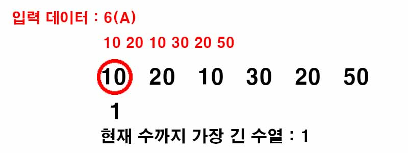
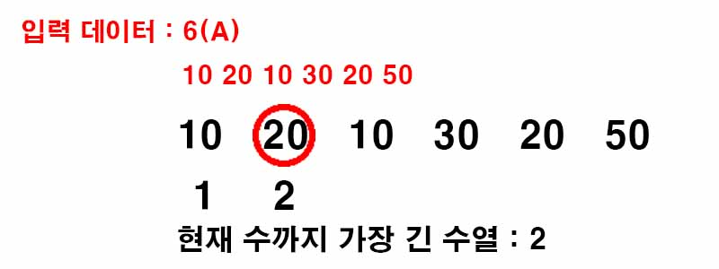
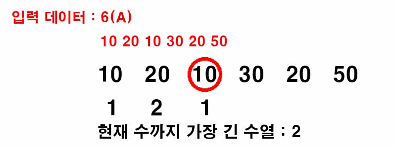
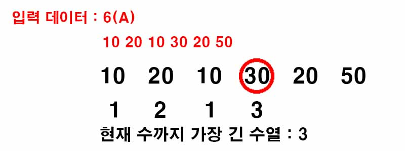
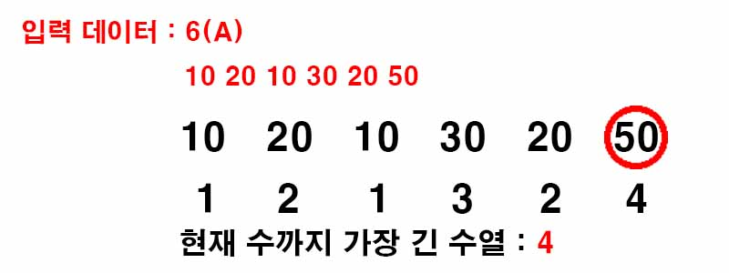

백준 11053. 가장 긴 증가하는 부분 수열
- https://www.acmicpc.net/problem/11053
-
문제 :
수열 A가 주어졌을 때, 가장 긴 증가하는 부분 수열을 구하는 프로그램을 작성하시오.
예를 들어, 수열 A = {10, 20, 10, 30, 20, 50} 인 경우에 가장 긴 증가하는 부분 수열은 A = {10, 20, 10, 30, 20, 50} 이고, 길이는 4이다. -
입력 :
첫째 줄에 수열 A의 크기 N (1 ≤ N ≤ 1,000)이 주어진다.
둘째 줄에는 수열 A를 이루고 있는 Ai가 주어진다. (1 ≤ Ai ≤ 1,000) -
출력 :
첫째 줄에 수열 A의 가장 긴 증가하는 부분 수열의 길이를 출력한다. -
풀이 :
bottom-up 방식을 사용했으며 현재 수를 포함하여 현재 수까지 가장 긴 부분 수열의 길이를 배열에 저장해간다.

현재 수 10까지 가장 긴 부분 수열은 10밖에 없으므로 1이 된다.

이전 수들을 확인했을 때 현재 수 20보다 작은 수들 중 가장 긴 부분 수열의 길이는 1이므로 현재 수 20까지 가장 긴 부분 수열의 길이는 2다.

이전 수들을 확인했을 때 현재 수 10보다 작은 수는 없으므로 현재 수 10을 포함한 가장 긴 부분 수열의 길이는 1이 된다.
이런 과정을 반복했을 때 가장 긴 부분 수열의 길이를 출력할 수 있다.


